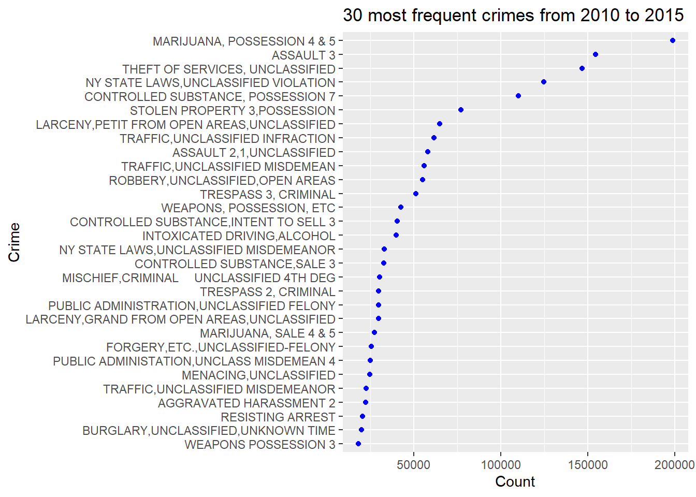
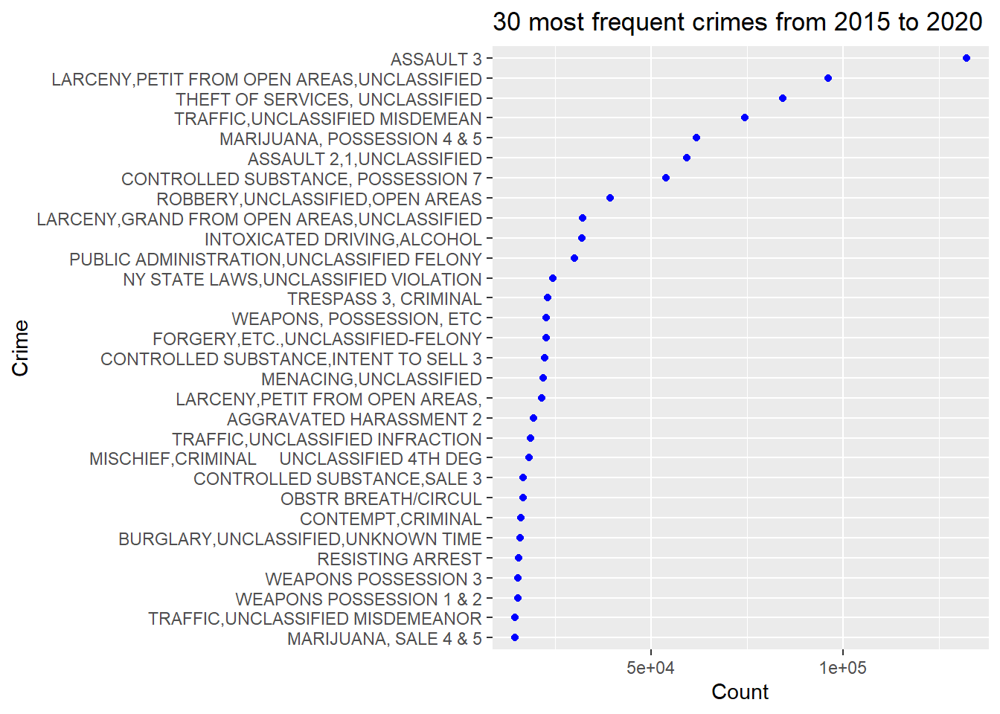
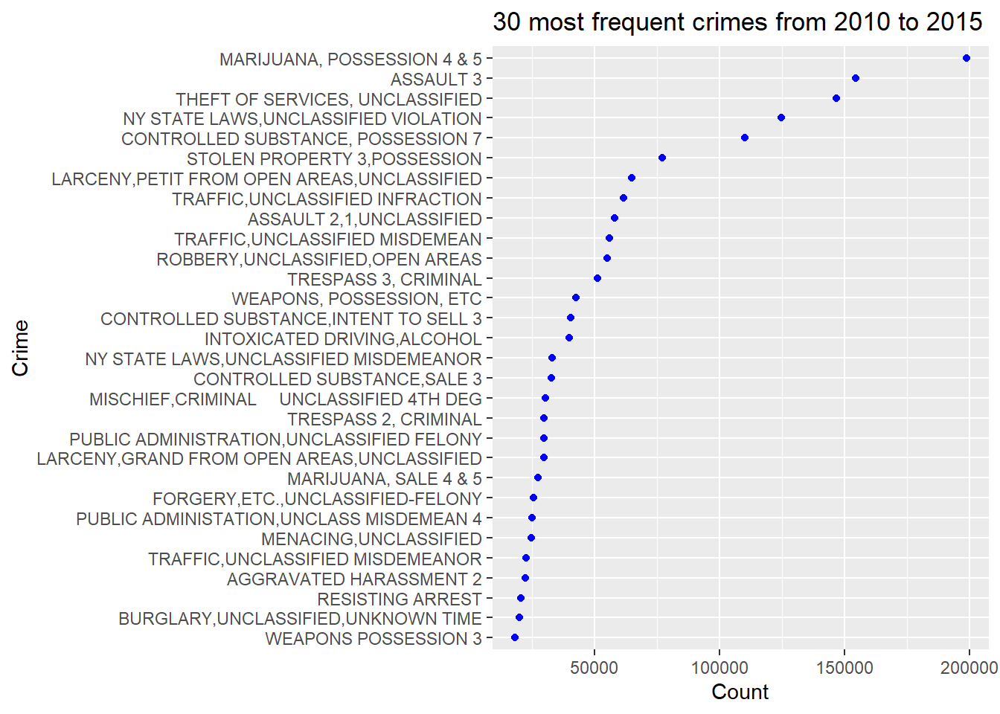
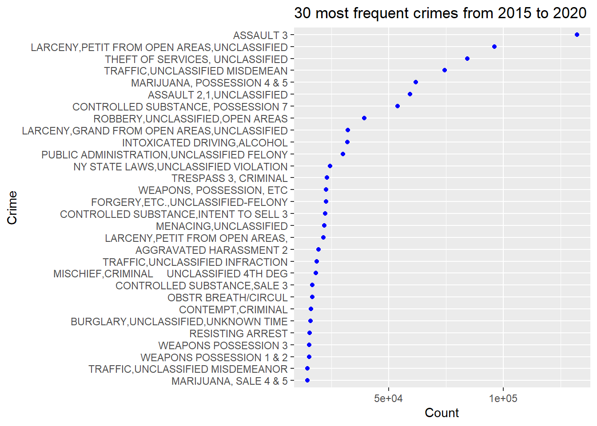
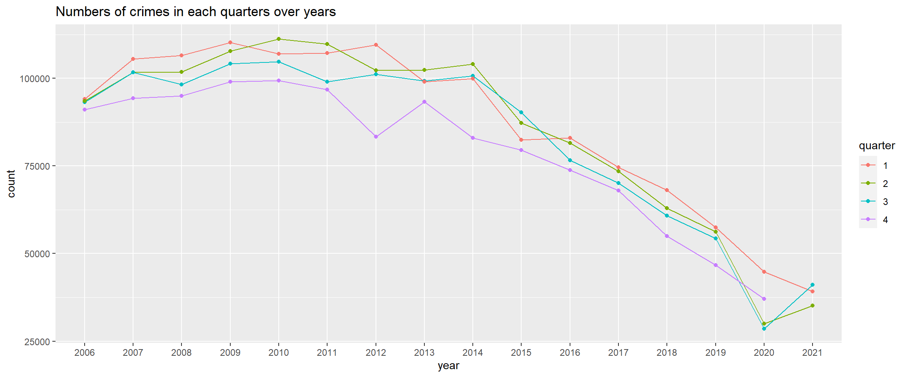

Chapter 5 Results
5.1 Arrest data analysis of NYC from 2013
5.1.1 Classification of crime
 

## PD_DESC variable value
## 1 AGGRAVATED HARASSMENT 2 2010 21085
## 2 ASSAULT 2,1,UNCLASSIFIED 2010 45097
## 3 ASSAULT 3 2010 114177
## 4 INTOXICATED DRIVING,ALCOHOL 2010 34846
## 5 MENACING,UNCLASSIFIED 2010 20176
## 6 RESISTING ARREST 2010 17614
## 7 TRESPASS 3, CRIMINAL 2010 37893
## 8 WEAPONS, POSSESSION, ETC 2010 33316
## 9 AGGRAVATED HARASSMENT 2 2015 22221
## 10 ASSAULT 2,1,UNCLASSIFIED 2015 57877
## 11 ASSAULT 3 2015 154340
## 12 INTOXICATED DRIVING,ALCOHOL 2015 39899
## 13 MENACING,UNCLASSIFIED 2015 24709
## 14 RESISTING ARREST 2015 20433
## 15 TRESPASS 3, CRIMINAL 2015 51097
## 16 WEAPONS, POSSESSION, ETC 2015 42647
## 17 AGGRAVATED HARASSMENT 2 2020 19338
## 18 ASSAULT 2,1,UNCLASSIFIED 2020 59347
## 19 ASSAULT 3 2020 131997
## 20 INTOXICATED DRIVING,ALCOHOL 2020 32086
## 21 MENACING,UNCLASSIFIED 2020 21875
## 22 RESISTING ARREST 2020 15588
## 23 TRESPASS 3, CRIMINAL 2020 23098
## 24 WEAPONS, POSSESSION, ETC 2020 22721
## 25 AGGRAVATED HARASSMENT 2 2021 2365
## 26 ASSAULT 2,1,UNCLASSIFIED 2021 10059
## 27 ASSAULT 3 2021 17580
## 28 INTOXICATED DRIVING,ALCOHOL 2021 2570
## 29 MENACING,UNCLASSIFIED 2021 3652
## 30 RESISTING ARREST 2021 1340
## 31 TRESPASS 3, CRIMINAL 2021 1049
## 32 WEAPONS, POSSESSION, ETC 2021 1495## [1] "integer"
5.2 Crime Geographical Analysis
In our dataset, there are some columns includes information about geographic information:
ARREST_BORO: Borough of arrest. B(Bronx), S(Staten Island), K(Brooklyn), M(Manhattan), Q(Queens)
ARREST_PRECINCT: Precinct where the arrest occurred
Latitude + Longitude : coordinates for Global Coordinate System, WGS
5.2.1 Borough Level Analysis
## <ggproto object: Class ScaleDiscrete, Scale, gg>
## aesthetics: fill
## axis_order: function
## break_info: function
## break_positions: function
## breaks: waiver
## call: call
## clone: function
## dimension: function
## drop: TRUE
## expand: waiver
## get_breaks: function
## get_breaks_minor: function
## get_labels: function
## get_limits: function
## guide: legend
## is_discrete: function
## is_empty: function
## labels: waiver
## limits: NULL
## make_sec_title: function
## make_title: function
## map: function
## map_df: function
## n.breaks.cache: NULL
## na.translate: TRUE
## na.value: grey50
## name: waiver
## palette: function
## palette.cache: NULL
## position: left
## range: <ggproto object: Class RangeDiscrete, Range, gg>
## range: NULL
## reset: function
## train: function
## super: <ggproto object: Class RangeDiscrete, Range, gg>
## rescale: function
## reset: function
## scale_name: manual
## train: function
## train_df: function
## transform: function
## transform_df: function
## super: <ggproto object: Class ScaleDiscrete, Scale, gg> \
\
\
\
 From the pie chart, we can know that the area with the most crime is Brooklyn and Staten Island has least crime numbers. Besides, we have ploted mosaic maps reflecting the proportion of crimes in different regions in different years. We found that the number of crimes in Queen is increasing, while the number of crimes in Manhattan has decreased, especially after 2015.
From the pie chart, we can know that the area with the most crime is Brooklyn and Staten Island has least crime numbers. Besides, we have ploted mosaic maps reflecting the proportion of crimes in different regions in different years. We found that the number of crimes in Queen is increasing, while the number of crimes in Manhattan has decreased, especially after 2015.
5.2.2 Precinct Level Analysis
 \ \

From the histogram of boroughs, we can find that crime will be concentrated in a few adjacent percints especially in Bronx and Queens. For example, crime is concentrated in areas 40-52 in queens. This performance not only accords with geographical continuity, but also provides reasonable suggestions for arranging police force in the future. Besides, We pick out the top 20 precincts with the most criminal records and found that 9 of them (almost 50%) are in Bronx, which is the most among 5 boroughs.
5.2.3 NYC crime maps